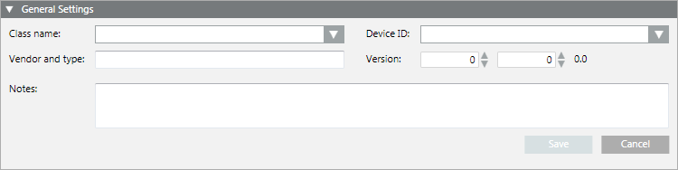
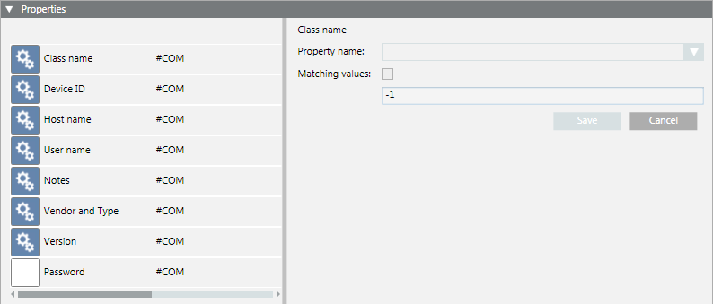

Configure the WMI UPS
Method 1 – Import UPS Configuration Settings from a File
- An XML file containing the configuration data for this UPS is available in the following project folder: [Installation Drive]:\[Installation Folder]\[Project Name]\devices.
For details on how to create such a file, see Export a WMI UPS Configuration to a File.
- Under one of the following paths, select the WMI UPS object that you want to configure:
- Project > Management System > Servers > Main Server > [WMI UPS]
- Project > Management System > Clients > [Client station] > [WMI UPS]
- Project > Management System > FEPs > [FEP station] > [WMI UPS]
- The System Management tab displays.
- Click Import
 .
. - In the Select device to import dialog box, select the XML file that corresponds to the appropriate device version. Then, click Import.
NOTE: If the properties names in the XML file do not match those of the WMI UPS object, the Combines the properties dialog box displays and asks you to align them:
- Select the correct matching, and click Import.
- The configuration data is copied from the file to the WMI UPS object.
Method 2 – Manually Enter the UPS Configuration Settings
- Under one of the following paths, select the WMI UPS object that you want to configure:
- Project > Management System > Servers > Main Server > [WMI UPS]
- Project > Management System > Clients > [Client station] > [WMI UPS]
- Project > Management System > FEPs > [FEP station] > [WMI UPS]
- The System Management tab displays.
- Open the General Settings expander, and complete the following fields:
- Class name
NOTE: If you do this configuration from a station that is not the Desigo CC server station (for example, from a client or FEP station), when you select the class name, the Server parameters dialog box displays.
Enter username and password of the Windows user who has the rights for the computer where the WMI UPS is configured and then click OK. - Device ID
- Vendor and type
- Version
- (Optional) Enter your remarks in the Notes field.
- Click Save.

- Open the Properties expander.
- For each property in the list:
a. Select it and configure the Property name.
b. (Optional) Select the Matching values option, and enter the appropriate numeric value.
c. Click Save.
